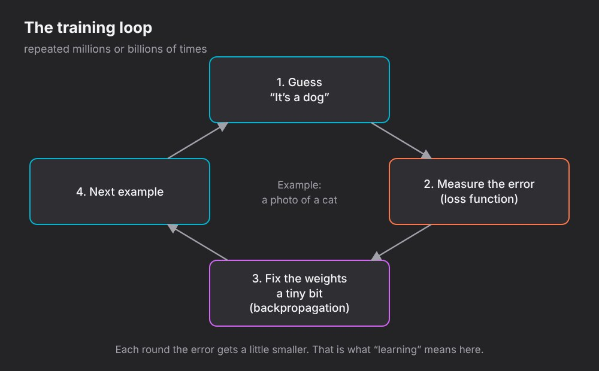
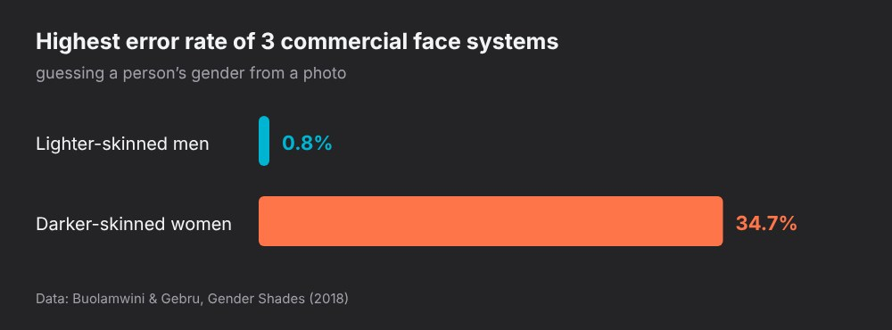

Data and Training
An AI Is What It Learns From
In 2014 Amazon started building an AI to read job applications and pick the best candidates automatically. They trained it on the resumes the company had received over the previous 10 years. The problem was that most of those resumes came from men, so the AI learned that men were better candidates. It gave lower scores to resumes with the word "women's" in them, as in "women's chess club captain". Amazon could not make sure it would stop doing this, and in the end the project was dropped.
Nobody at Amazon had told the AI to be unfair. It just copied what it saw in the data. This article explains how data turns into an AI, and why the data matters so much.
How Training Works
In the last article we saw that a neural network stores everything it knows in its weights. At the start these weights are random numbers, so the network knows nothing. Training is how they slowly get the right values.
It works in a loop. The network looks at an example, say a photo of a cat, and makes a guess. At the beginning the guess is basically random, maybe "dog". Then a formula called the loss function measures how wrong the guess was. A method called backpropagation goes back through the network and works out which weights caused the mistake, and each of them is changed by a tiny amount so that the error gets a bit smaller. Then the network looks at the next example, and the loop starts again, millions or billions of times.

The step where the weights are adjusted is called gradient descent. Think of being on a mountain in thick fog, trying to get down to the valley. You cannot see the bottom, but you can feel which way the ground slopes under your feet. So you take a small step downhill, feel again, and take another step. Training does the same thing, only the mountain is the error and there are billions of directions instead of four.
Don't Memorize the Test
To check that a model really learned something, part of the data is kept hidden during training. At the end the model is tested on it, like a test with questions you have never seen. If a model is perfect on the training data but bad on the new data, it has overfitted: it memorized the examples instead of learning the general idea.
How Much Data?
A lot. GPT-3, released in 2020, was trained on about 300 billion tokens, small pieces of text. In 2024 Meta trained its Llama 3 models on more than 15 trillion tokens collected from public sources, seven times more than the model before. The training ran on two clusters of 24,000 graphics cards each.
It is also very expensive. OpenAI's CEO Sam Altman said that training GPT-4 cost more than 100 million dollars.
The People Behind the Data
Data does not label itself. Someone has to say which photo is a cat and which text is dangerous, and often that someone is paid very little. In 2023 a TIME investigation found that OpenAI had used workers in Kenya, hired through a company called Sama, to read and label violent and disturbing texts, so that ChatGPT would learn to avoid them. They took home between about 1.32 and 2 dollars per hour, and some described the work as traumatic. Sama ended the contract eight months early.
When the Data Is Unfair
If some groups are missing from the data, the AI works worse for them. In 2018 the researchers Joy Buolamwini and Timnit Gebru tested three commercial face analysis systems that guess a person's gender. Two well-known face datasets they looked at were made of 79.6% and 86.2% lighter-skinned faces. The results showed it: the error rate for lighter-skinned men was at most 0.8%, but for darker-skinned women it went up to 34.7%.

Garbage In, Garbage Out
Programmers have an old saying for this: "garbage in, garbage out". An AI does not know what is true or fair, it only knows what was in its data. Amazon's tool copied the past, and the face systems failed the people who were missing from their photos. Choosing and checking the data is just as important as building the network. The next article looks at the AI trained on the biggest pile of data of all, a big part of the public internet: the chatbot.
Sources
- Reuters. Amazon scraps secret AI recruiting tool that showed bias against women (2018)
- IBM. What is machine learning?
- Zeiler & Fergus. Visualizing and Understanding Convolutional Networks (2013)
- Brown et al. Language Models are Few-Shot Learners (GPT-3) (2020)
- Meta AI. Introducing Meta Llama 3 (2024)
- Wired. OpenAI's CEO Says the Age of Giant AI Models Is Already Over (2023)
- TIME. OpenAI Used Kenyan Workers on Less Than $2 Per Hour to Make ChatGPT Less Toxic (2023)
- Buolamwini & Gebru. Gender Shades: Intersectional Accuracy Disparities in Commercial Gender Classification (2018)
Image credits
- Fog around Lake Heron, Taylor Range, Canterbury, New Zealand by Michal Klajban, CC BY-SA 4.0, via Wikimedia Commons, resized